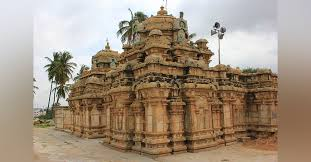
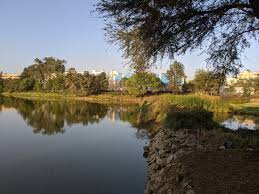
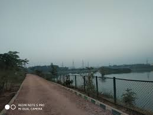

Bommanahalli is situated in southern Bangalore and in the zones of Bruhat Bengaluru Mahanagara Palike (BBMP). It sits near national highway 44 and close to the IT hub Electronics City. Two of The Oxford Educational Institutions are located in Bommanahalli, the Oxford College of Engineering and the Oxford Dental College, Hospital and Research Center. Because of its connection with NH 44, the locality has an excellent connection with prime locations in Bangalore such as BTM Layout, HSR Layout, and Koramangala. There are several residential areas here such as the Seenappa Layout, Kodichikkanahalli, Anugraha Layout, and Virat Nagar. Bommanahalli is the preferred locality due to the good public transportation. The infrastructure is well-developed and there are several shopping avenues. This locality is also preferred by IT professionals due to its proximity to the IT hub Electronics City. Due to the good transportation connectivity and IT hub, this locality attracts a lot of property buyers. This locality again emphasizes on the good connectivity to Electronic City, Hosur Road, Bannerghatta Road, Outer Ring Road, and Koramangla. Bus stands are hardly a km away.
|  |  |
|
 |